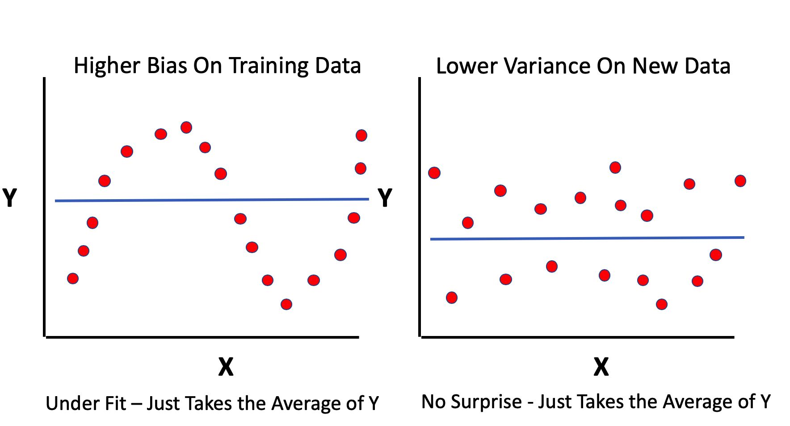
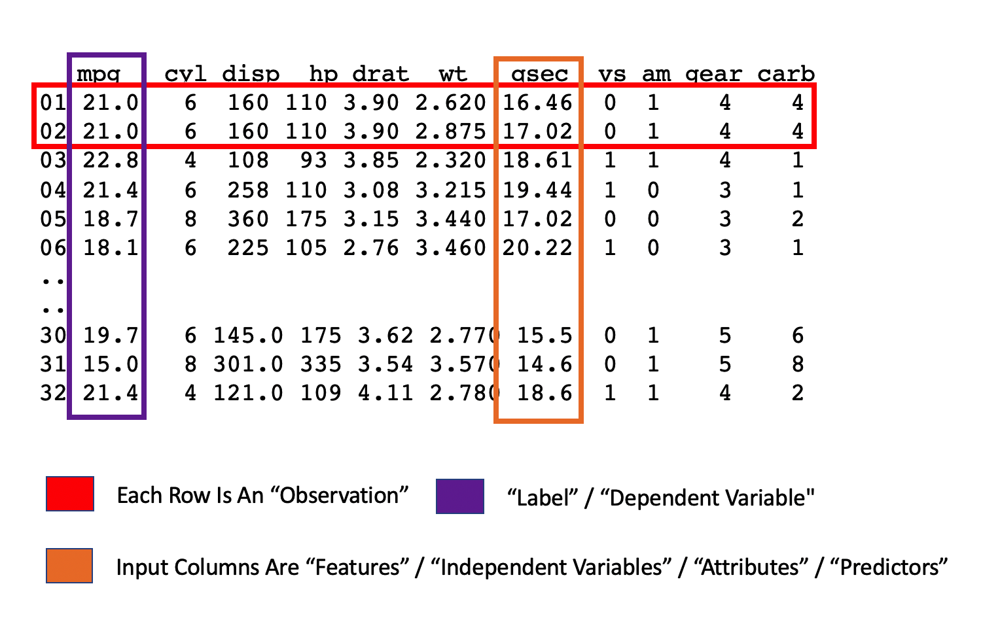
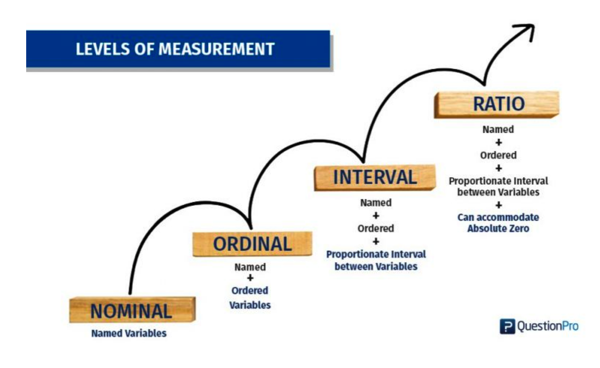
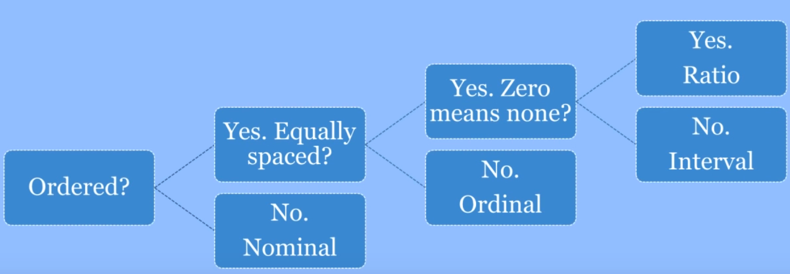

Chapter 2 Predictive / Supervised Learning
In Predictive Learning it is customary to apply methods to build models on existing data to help you
- Understand the data at hand and
- Build a model to predict outcomes on related information
Of course, number 2 assumes that what you already know in terms of the data and model is suitable for application to a more general situation when this might not be the case.
2.1 Explanation vs Prediction
Sometimes you just want to build a model (apply a method) to explain the data at hand as opposed to using it to predict outcomes for incoming data of a related nature. Not all models need to be predictive and in fact it might be useful to first get a basic understanding of the data before attempting to extend it to new information.
“A common misconception in various scientific fields is that predictive power can be inferred from explanatory power. However, the two are different and should be assessed separately.”
— Gamit Shmueli - “To Explain or Predict”
Given a data set, there might be some variable therein that you would like to predict in terms of other variables. Ideally you would like to automate this process but not at the expense of understanding the underlying statistical considerations. The process should also be done in a way that allows one to define a specific performance measure / metric that can then be used to compare performance across a number of “models”.
Relative to explanatory work you wish to drill down into the data to better understand it and are less concerned about how any resulting model might apply to unseen or new data. In this case you might not look at other data sets or permutated versions of the data in which case you just build different models against the same data while trying out different features to arrive a the “best” model.
In predictive work, we typically use techniques such as cross fold validation and bootstrapping to provide us with different versions of the data to “train” a model after which we validate it on some “test” data that has been held out. So in this context, you will probably be looking at multiple versions of the original data set which adds to the overhead somewhat.
2.1.1 Titanic Data
A good example of explanatory work is the often referred to “Titanic” data set that has lots of information on the passengers who traveled on the ill-fated Titanic ship. This data set is used in many Data Science type educational contexts to talk about building models.
url <- "https://raw.githubusercontent.com/steviep42/bios534_spring_2020/master/data/etitanic.csv"
titan <- read.csv(url)
head(titan)## pclass survived sex age sibsp parch
## 1 1st 1 female 29.0000 0 0
## 2 1st 1 male 0.9167 1 2
## 3 1st 0 female 2.0000 1 2
## 4 1st 0 male 30.0000 1 2
## 5 1st 0 female 25.0000 1 2
## 6 1st 1 male 48.0000 0 0This data set provides information on the fate of passengers on the fatal maiden voyage of the ocean liner ‘Titanic’, summarized according to economic status (class), sex, age and survival.
pclass Passenger Class (1 = 1st; 2 = 2nd; 3 = 3rd)
survival Survival (0 = No; 1 = Yes)
sex Sex
age Age
sibsp Number of Siblings/Spouses Aboard
parch Number of Parents/Children AboardSo then we look at different plots to become acquainted with the data. Here let’s see the survival counts by Gender:
titan %>%
mutate(survived=factor(survived,labels=c("Died","Survived"))) %>%
group_by(survived,sex) %>%
count() %>%
ungroup() %>%
mutate(sex = fct_reorder(sex,n)) %>%
ggplot(aes(x=sex,y=n,fill=survived)) +
geom_col() + theme_light() +
xlab("Gender") + ylab("Number of Persons") +
ggtitle("Titanic Survival By Gender")Next, we’ll see the survival rates by Passenger Class. If you saw the movie Titanic then you know what this will look like:
titan %>%
mutate(survived=factor(survived,labels=c("Died","Survived"))) %>%
group_by(survived,pclass) %>%
count() %>%
ungroup() %>%
mutate(pclass = fct_reorder(pclass,n)) %>%
ggplot(aes(x=pclass,y=n,fill=survived)) +
geom_col() + theme_light() +
xlab("Passenger Class") + ylab("Number of Persons") +
ggtitle("Titanic Survival By Passenger Class")Next, let’s see the above plot broken out by gender:
titan %>%
mutate(survived=factor(survived,labels=c("Died","Survived"))) %>%
group_by(survived,pclass,sex) %>%
count() %>%
ungroup() %>%
mutate(pclass = fct_reorder(pclass,n)) %>%
ggplot(aes(x=pclass,y=n,fill=survived)) +
geom_col() + theme_light() + facet_wrap(~sex) +
xlab("Passenger Class") + ylab("Number of Persons") +
ggtitle("Titanic Survival By Passenger Class")We could even look at age distributions here. What patterns do you see here ? Did young children fare better than say someone who was 25-35 ?
2.2 Bias vs Variance
See this blog for more information.
2.2.1 Bias
Think of the term bias as meaning deviation from the truth or reality. If a model fits some data very well then deviations from the actual values will be small which is what you might expect when applying the model to the very data used to produce it. You are able to explain the data but not then be able to use it to predict outcomes without experiencing large variance.
Any performance metric that is computed on the data “as is” will typically be somewhat optimistic in the context of predictive utility. The model you build on some data might fit the data very well (low bias) but then does not do very well when applied to a new data set wherein the model exhibits large variance. A model might not, on average, fit some existing data very well (high bias) but results in more predictable results (lower variance) when applied to new data.
2.2.2 Variance
The concept of variance generally refers to a given algorithm’s sensitivity to unfamiliar or new data. An algorithm that has been well-trained, or even over trained, on a data set might exhibit low bias in that it “knows” or “hugs” the data very well. However, when given new data that might not be from the same distribution as the “training” data then large and/or unpredictable variance might result. If you flip this around a bit, an algorithm whose bias is high generally means that it deviates from the “truth” perhaps to a significant degree. Correspondingly, when the resulting model is applied to new or unseen data it will behave in a more predictable manner, generally resulting in lower variance. This isn’t always a bad thing. Maybe a more biased model is quick and easy to compute and it’s estimated performance (as determined by some metric such as RMSE) might be acceptable when applied to new data.
The general conclusion is that there is a trade off between Bias and Variance. The higher the bias, the lower the variance and the higher the variance, the lower the bias.

2.3 Overfitting and Underfitting
If we overfit some data we then undermine our ability to apply it to new data in a way that results in good performance. This is the case where we have high model bias and resulting high variability when it is applied to new data. If you do “too good of a job” of learning some data then you might actually be unknowingly modeling inherent sources of error.

If we underfit some data then consider that we haven’t “learned enough” from it to ensure low bias (deviations from reality). On the other hand if the model does a “good enough job” of describing the data then maybe it’s not a big deal especially since, when applied to new data, it doesn’t exhibit a high degree of variance.
Simpler models, such as linear regression, can be like this - easy to understand but somewhat biased in their assessment of data. Depending on the size of the data it might be computationally less expensive to build more biased models.

Which one of the models is more biased ?
plot(mpg~wt,data=example_Train,main="Two Models For The Same Data")
abline(lm_fit$finalModel)
grid()
svm_preds <- predict(my_svm,example_Train)
pdf <- data.frame(cbind(Train$wt,svm_preds))
points(svm_preds~V1,data=pdf[order(pdf$V1),],col="red",pch=4,type="l")
legend("topright",c("lm","svm"),col=c("black","red"),lty=1,cex=1)
Models that are biased generally have less variability when applied to new data whereas less biased models generally have higher variability when applied to new data. Obviously, striking a balance between the two is desirable. There are techniques to help with this.
2.4 Some Important Terminology
While we could start building a lot of models at this point it would be wise to review some jargon in the world of predictive modeling so we can understand how to fully exploit the variables (also known as “features”) in our data. This is very important. Let’s start out with a basic example involving the most (over)used data set in R Education - the “mtcars” data frame. If you are using R you can simply type data(mtcars) or read it in as follows:
url <- "https://raw.githubusercontent.com/steviep42/bios534_spring_2020/master/data/mtcars.csv"
mtcars <- read.csv(url, stringsAsFactors = FALSE)If you are using Python then reading it in looks something like:
import pandas as pd
url = "https://raw.githubusercontent.com/steviep42/bios534_spring_2020/master/data/mtcars.csv"
dfmtcars = pd.read_csv(url)
dfmtcars.head()
mpg cyl disp hp drat wt qsec vs am gear carb
0 21.0 6 160.0 110 3.90 2.620 16.46 0 1 4 4
1 21.0 6 160.0 110 3.90 2.875 17.02 0 1 4 4
2 22.8 4 108.0 93 3.85 2.320 18.61 1 1 4 1
3 21.4 6 258.0 110 3.08 3.215 19.44 1 0 3 1
4 18.7 8 360.0 175 3.15 3.440 17.02 0 0 3 2The documentation for the data frame is as follows:
Motor Trend Car Road Tests
The data was extracted from the 1974 Motor Trend US magazine,
and comprises fuel consumption and 10 aspects of automobile
design and performance for 32 automobiles (1973–74 models).
A data frame with 32 observations on 11 (numeric) variables.
[, 1] mpg Miles/(US) gallon
[, 2] cyl Number of cylinders
[, 3] disp Displacement (cu.in.)
[, 4] hp Gross horsepower
[, 5] drat Rear axle ratio
[, 6] wt Weight (1000 lbs)
[, 7] qsec 1/4 mile time
[, 8] vs Engine (0 = V-shaped, 1 = straight)
[, 9] am Transmission (0 = automatic, 1 = manual)
[,10] gear Number of forward gears
[,11] carb Number of carburetorsWe need to understand the variables in this data frame beyond the superficial. Let’s say that we wanted to predict the mpg for a given car using other variables in the data frame. We might also want to predict whether a car has an automatic or manual transmission based on some other variables. Some jargon would be useful here. For example, if we wanted to predict the mpg, consider the following graphic:

Or if we wanted to predict the transmission type - the jargon is the same but the variable type is different:
In the first case we are attempting to predict a numeric quantity whereas in the second case we are predicting a binary outcome (a 0 or 1) which corresponds to, respectively, an automatic or manual transmission. The fact that it appears to be numeric is a bit deceptive since it’s just a label - we wouldn’t compute on this number. So how do we get to know the data ? Plotting it might be one way but there are a couple of ways to get some clues up front using some code:
## mpg cyl disp hp drat wt qsec vs am gear carb
## 1 25 3 27 22 22 29 30 2 2 3 6Be on the lookout for columns that don’t have very many unique values such as vs, am, and cyl. These are more likely categories by which we might summarize the continuous quantities. As an example - what is the average mpg for each transmission type ?
What is the average mpg for all cylinder types ? Even though all the variables appear to be numeric doesn’t mean that they can be “computed” on. Does it make sense to take the average of the transmission type ? It’s either 0 or 1 (auto or manual). There is no such thing as a car with a 0.40625 transmission.
## [1] 0.40625Perhaps it’s better to count the number of times each transmission type occurs.
##
## 0 1
## 19 13Or summarize MPG in terms of the am
mtcars %>%
mutate(am=factor(am,labels=c("Auto","Manual"))) %>%
group_by(am) %>%
dplyr::summarize(Average_mpg=mean(mpg))## # A tibble: 2 x 2
## am Average_mpg
## <fct> <dbl>
## 1 Auto 17.1
## 2 Manual 24.42.5 Levels of Measurement
We should review the concepts behind the “levels of measurement” which are helpful in classifying the variables we have in this, or other, data frames. Here is a graphic which summarizes them. (Note: see this video from which the graphics were taken.)

2.5.1 Nominal
- The lowest level of measurement
- Discrete Categories
- No Order
- Binary
- Qualitative or Categorical
Examples include gender (assuming binary M/F), colors (“red”,“blue”,“pink”), marital status, religion, political affiliation (“republican”,“democrat”), smoker (“Y/N”), names
Possible measures for this type of information include Mode, Range, Percentage
2.5.2 Ordinal
- Ordered Categories
- Relative Rankings
- Unknown Distance Between Rankings
- Zero Is Arbitrary
Examples include “first, second, third”, “low, middle, high”, Likert scales, size (small, medium,large), movie ratings, satisfaction ratings, pain ratings (1-10)
Possible measures include all those for nominal data with the addition of Median, Percentile, and Rank order or correlations. Can be counted but not measured granulalrly.
2.5.3 Interval
- Ordered categories
- Equal distance between values
- Known and accepted unit of measurement
- Zero is arbitrary
The difference between two variables is on an interval. Fahrenheit or Celsius temp (0 does not represent and absolute lowest value). Interval scales tell us about order and differences. Elevation, time of day.
Measures include all those for Ordinal with the addition of mean, standard deviation, addition, and subtraction. However, multiplication and division wouldn’t make sense given that there is no absolute zero. Would a cylinder value of 0 make sense ?
2.5.4 Ratio
- Equal Intervals
- Ordered
- Natural Zero
Examples include Weight, Height, Time (stopwatch) degrees Kelvin, blood pressure,
Can use all Interval tests, descriptive and inferential statistics, can make comparisons, add, subtract, multiply, divide.
Decision Tree for Levels of Measurement:
